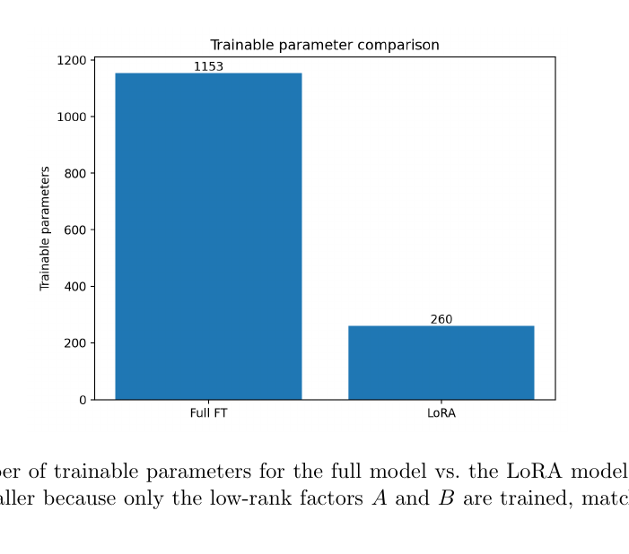

Overview
This paper develops a unified view of LoRA, LoRA+, and QLoRA for parameter-efficient adaptation of quantized large language models under constrained compute.
Research question
How can large language models be adapted efficiently when full fine-tuning is too expensive in memory and trainable parameter count?
Framework
- LoRA constrains updates to low-rank matrices instead of training the full weight matrix.
- LoRA+ modifies optimization behavior across the low-rank factors.
- QLoRA combines low-rank adaptation with a quantized frozen backbone.
- The paper compares parameter and memory implications under constrained compute.
Analytical and experimental work
I derived parameter and memory expressions, then built reproducible PyTorch experiments comparing full fine-tuning with LoRA-style adaptation on controlled tasks. The goal was not to claim state-of-the-art model quality, but to make the efficiency tradeoff concrete and reproducible.

Takeaway
Parameter-efficient adaptation can preserve a useful adaptation pathway while dramatically reducing the number of trainable parameters. Quantization extends the memory savings further, but introduces its own implementation and evaluation tradeoffs.